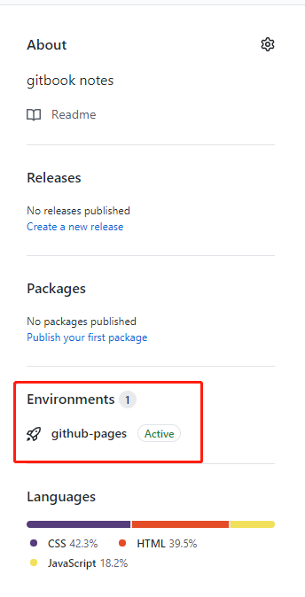
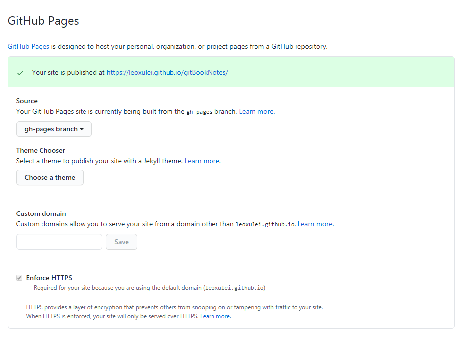
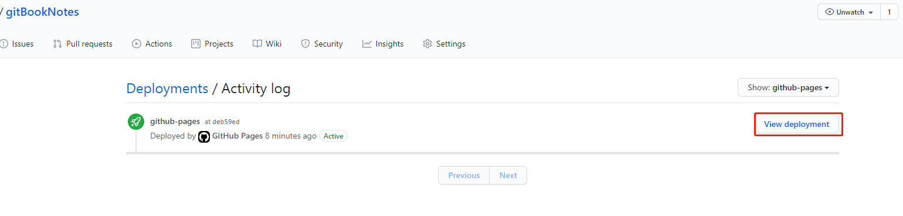
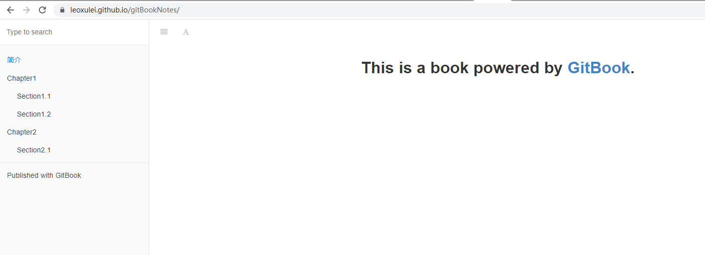

发布到Github Pages
GitHub会为每个账号分配一个二级域名 USERNAME.github.io 作为用户的首页地址。实际上还可以为每个项目设置主页，项目主页也通过此二级域名进行访问。
只需要在项目版本库中创建一个名为gh-pages的分支即可，即可通过 http://USERNAME.github.io/PROJECT_NAME 访问。
将编写好的格式为.md的文件通过Gitbook编译得到_book目录下的一系列html文件，然后将这些文件发布到Github Gages上去。 .md文件为master分支，而hmtl文件为gh-pages分支。我个人比较喜欢将源码，即.md文件与Github Pages静态文件存放在一个仓库中。流程会简单点：（省去了切换分支，但是任然需要拷贝静态文件、单独push
gh-pages分支到远程）
- 创建一个新分支：
git checkout -b gh-pages，注意，分支名必须为gh-pages。 - 将分支push到仓库：
git push -u origin gh-pages。 - 切换到主分支：
git checkout master。 - 克隆gh-pages分支：
git clone -b gh-pages git@github.com:USERNAME/PROJECT_NAME.git book-end。这步我们只克隆了gh-pages分支，并存放在一个新的目录book-end里面，且gitignore忽略book-end文件夹。 - 拷贝静态文件到book-end目录：
cp -r _book/* book-end。本地编辑编译书籍后拷贝_book目录下一系列静态文件到book-end目录中(根目录下操作)。 - push到远程gh-pages分支：需在
book-end目录下push到远程仓库。
  
效果如下：
